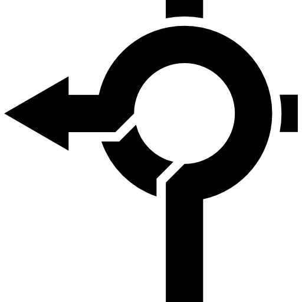

- 코딩공부를 시작하는 마음가짐
- 간단한 계획
예기치않게 찾아온 인생의 전환점

아무런 생각 없이 컴공과에 수시 원서를 쓰고, 모두 낙방하는 고배를 마신 나. 원치 않게 다시 대입을 준비하면서 1년이라는 빈 시간이 생겼다. 울타리 없는 야인으로서 살아본 적이 없어서
두렵기도 하지만, 성인이 되는 이 시기에 많은 생각을 할 수 있는 시간을 갖게 된 것이 행운이라고 생각한다.
따라서 이 시간을 헛되게 보내고 싶지 않기에 코딩공부를 시작하기로 했다.
코딩 공부를 통해 컴공이라는 전공과 나의 케미를 알아보고, 새로운 것을 배우는 즐거움을 얻고싶다.